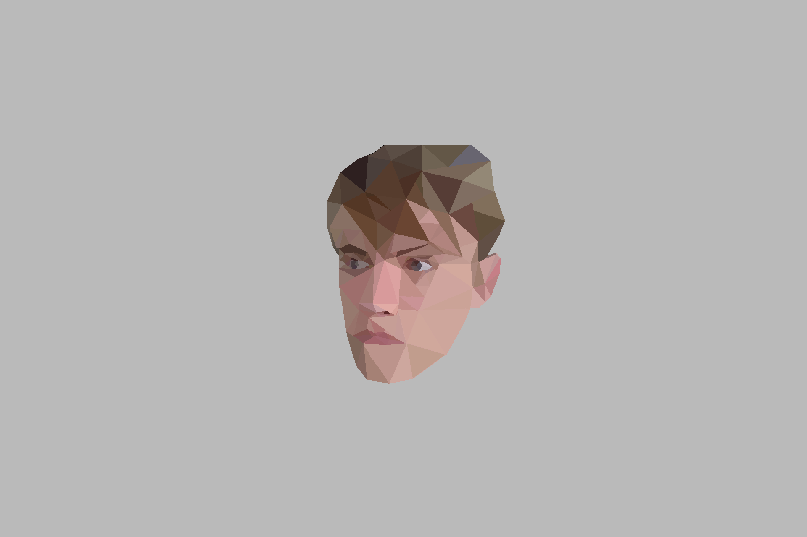

Wie Ben Ik
Mijn naam is Ruben Ensing ik ben een 18 jarige junior softwareontwikkelaar. Momenteel ben ik een 2e-jaars student op het Friesland college in Heerenveen, daar ben ik bezig met een opleiding softwareontwikkelaar.
Mijn naam is Ruben Ensing ik ben een 18 jarige junior softwareontwikkelaar. Momenteel ben ik een 2e-jaars student op het Friesland college in Heerenveen, daar ben ik bezig met een opleiding softwareontwikkelaar.